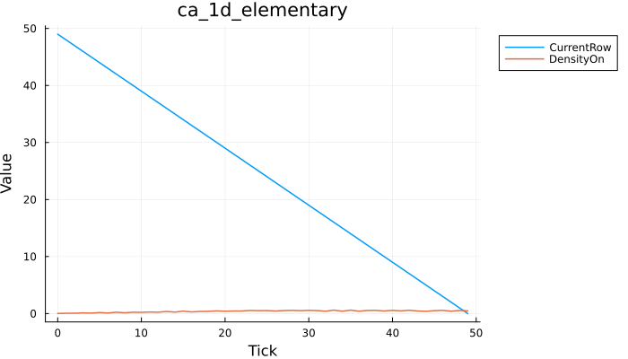

CA 1D Elementary
Overview
WHAT IS IT?
This program models one-dimensional cellular automata. A cellular automaton (CA) is a computational machine that performs actions based on certain rules. The automaton is divided into cells, like the square cells of a checkerboard. Each cell can be either on or off (its “state”). The board is initialized with some cells on and some off. At each time step (or “tick”) some rules “fire” and this results in some cells turning “on” and some turning “off”.
There are many kinds of cellular automata. In this model, we explore one-dimensional CA – the simplest types of CA. In this case of one-dimensional cellular automata, each cell checks the state of itself and its neighbors to the left and right, and then sets the cell below itself to either “on” or “off”, depending upon the rule. This is done in parallel and continues until the bottom of the board.
This model explores all 256 possible CA rules that can be constructed by each cell checking only its immediate left and immediate right neighbor. Cellular automata can be created on any board size and dimension.
This model is one of a collection of 1D CA models. It is meant for the more sophisticated user. If you are seeing CA for the first time, we suggest you check out one of the simpler CA models such as CA 1D Rule
In his book, “A New Kind of Science”, Stephen Wolfram argues that simple computational devices such as CA lie at the heart of nature’s patterns and that CAs are a better tool than mathematical equations for the purpose of scientifically describing the world.
THINGS TO NOTICE
What different patterns are formed by using a random setup versus a single setup?
Why do some rules always end up the same, regardless of the initial setup?
Are there rules that repeat a pattern indefinitely?
Are there rules that produce seemingly chaotic, random results?
Can all rules be classified into these above types? Are there more rule types than these?
Note that the pictures generated by this model do not exactly match the pictures in Wolfram’s book, “A New Kind of Science”. That’s because Wolfram’s book computes the CA as an infinite grid while the NetLogo model “wraps” around the horizontal boundaries. To get pictures closer to the ones in the book, you may need to increase the size of the world. You can increase the size of the world up to the available memory on your computer. However, the larger the world, the longer time it will take NetLogo to compute and display the results.
THINGS TO TRY
Find some rules that converge to all cells “on” or to all cells “off”.
Are there any rules that conditionally converge to all cells “on” or all cells “off”, depending upon the initial percentage of on/off cells?
A classic automaton is used to compute various things. Can these cellular automata be used to compute anything? How?
Experiment with the density variable and various types of rules. What are some relationships?
EXTENDING THE MODEL
What if a cell’s neighborhood was five cells – two to the left, itself, and two to the right?
Classical CA use an “infinite board”. The CAs shown here “wrap” around the horizontal edges of the world (sometimes known as a periodic CA or CA with periodic boundary condition). How would you implement a CA in NetLogo that comes closer to the infinite board?
Try making a two-dimensional cellular automaton. The neighborhood could be the eight cells around it, or just the cardinal cells (the cells to the right, left, above, and below).
Can you develop some tools to analyze the behavior of CAs? Compare different iterations from one continuation to the next of the same CA? Compare different rules?
NETLOGO FEATURES
This model takes advantage of a special optimization in the NetLogo compiler that makes the expression “ask patches with [px/ycor =
RELATED MODELS
Life - an example of a two-dimensional cellular automaton CA 1D Rule 30 - the basic rule 30 model CA 1D Rule 30 Turtle - the basic rule 30 model implemented using turtles CA 1D Rule 90 - the basic rule 90 model CA 1D Rule 110 - the basic rule 110 model CA 1D Rule 250 - the basic rule 250 model CA 1D Totalistic - a model that shows all 2,187 possible 1D 3-color totalistic cellular automata. CA Stochastic- the probabalistic counterpart to this model
CREDITS AND REFERENCES
Thanks to Eytan Bakshy, Geoff Hulette, and Erich Neuwirth for their help with this model.
The first cellular automaton was conceived by John Von Neumann in the late 1940’s for his analysis of machine reproduction under the suggestion of Stanislaw M. Ulam. It was later completed and documented by Arthur W. Burks in the 1960’s. Other two-dimensional cellular automata, and particularly the game of “Life,” were explored by John Conway in the 1970’s. Many others have since researched CA’s. In the late 1970’s and 1980’s Chris Langton, Tom Toffoli and Stephen Wolfram did some notable research. Wolfram classified all 256 one-dimensional two-state single-neighbor cellular automata. In his recent book, “A New Kind of Science,” Wolfram presents many examples of cellular automata and argues for their fundamental importance in doing science.
See also:
Von Neumann, J. and Burks, A. W., Eds, 1966. Theory of Self-Reproducing Automata. University of Illinois Press, Champaign, IL.
Toffoli, T. 1977. Computation and construction universality of reversible cellular automata. J. Comput. Syst. Sci. 15, 213-231.
Langton, C. 1984. Self-reproduction in cellular automata. Physica D 10, 134-144
Wolfram, S. 1986. Theory and Applications of Cellular Automata: Including Selected Papers 1983-1986. World Scientific Publishing Co., Inc., River Edge, NJ.
Bar-Yam, Y. 1997. Dynamics of Complex Systems. Perseus Press. Reading, Ma.
Wolfram, S. 2002. A New Kind of Science. Wolfram Media Inc. Champaign, IL.
HOW TO CITE
If you mention this model or the NetLogo software in a publication, we ask that you include the citations below.
For the model itself:
- Wilensky, U. (1998). NetLogo CA 1D Elementary model. http://ccl.northwestern.edu/netlogo/models/CA1DElementary. Center for Connected Learning and Computer-Based Modeling, Northwestern University, Evanston, IL.
Please cite the NetLogo software as:
- Wilensky, U. (1999). NetLogo. http://ccl.northwestern.edu/netlogo/. Center for Connected Learning and Computer-Based Modeling, Northwestern University, Evanston, IL.
COPYRIGHT AND LICENSE
Copyright 1998 Uri Wilensky.

This model is licensed under the Creative Commons Attribution-NonCommercial-ShareAlike 3.0 License. To view a copy of this license, visit https://creativecommons.org/licenses/by-nc-sa/3.0/ or send a letter to Creative Commons, 559 Nathan Abbott Way, Stanford, California 94305, USA.
NetLogo itself is free software for non-commercial use under the terms of the GNU General Public License (see full license information here).
To inquire about commercial licenses for either NetLogo or specific models from the models library, please contact netlogo-commercial-admin@ccl.northwestern.edu.
This model was created as part of the project: CONNECTED MATHEMATICS: MAKING SENSE OF COMPLEX PHENOMENA THROUGH BUILDING OBJECT-BASED PARALLEL MODELS (OBPML). The project gratefully acknowledges the support of the National Science Foundation (Applications of Advanced Technologies Program) – grant numbers RED #9552950 and REC #9632612.
This model was converted to NetLogo as part of the projects: PARTICIPATORY SIMULATIONS: NETWORK-BASED DESIGN FOR SYSTEMS LEARNING IN CLASSROOMS and/or INTEGRATED SIMULATION AND MODELING ENVIRONMENT. The project gratefully acknowledges the support of the National Science Foundation (REPP & ROLE programs) – grant numbers REC #9814682 and REC-0126227. Converted from StarLogoT to NetLogo, 2001.
Parameters
| Parameter | Type | Default | Description |
|---|---|---|---|
grid_width | Int | 51 | number of cells in 1D row (NetLogo -25..25) |
grid_height | Int | 50 | number of time steps (rows) (NetLogo 0..49) |
rule | Int | 30 | Wolfram rule number (0-255) |
density | Float64 | 50.0 | percent on for random init |
random_init | Bool | false | false = single center cell |
max_ticks | Int | 49 | grid_height - 1 time steps |
Source Code
The Julia code to run this model:
using ArkModelZoo
_, trajectory = run_ca_1d_elementary()Time Series

Ensemble Runs
Ten replicates with different random seeds, showing mean ± standard deviation.

Parameter Sensitivity
Varying rule.

Appendix: Source Code
This model is implemented in the Ark.jl Entity-Component-System (ECS) framework. The code is split into five files, each with a distinct role:
- Parameters: a mutable struct holding all configurable values.
- Components: lightweight data types attached to individual entities (agents).
- Resources: world-level shared state accessible to all systems.
- Systems: functions that operate on entities each tick, defining model behavior.
- Model: wiring that assembles the world, registers resources and systems, and provides the run entry point.
Parameters (parameters.jl)
The parameter struct uses @kwdef so that every field has a default value and can be overridden by keyword. These defaults match the original NetLogo model’s slider settings.
Base.@kwdef mutable struct CA1DParams
grid_width::Int = 51 # number of cells in 1D row (NetLogo -25..25)
grid_height::Int = 50 # number of time steps (rows) (NetLogo 0..49)
rule::Int = 30 # Wolfram rule number (0-255)
density::Float64 = 50.0 # percent on for random init
random_init::Bool = false # false = single center cell
max_ticks::Int = 49 # grid_height - 1 time steps
seed::Int = 42
endComponents (components.jl)
Components are lightweight data types attached to individual entities (agents). Mutable structs hold per-entity state, while empty tag structs act as markers for the ECS query system to efficiently filter entities.
mutable struct CA1DDummy
val::Int
end
CA1DDummy() = CA1DDummy(0)Resources (resources.jl)
Resources are world-level singletons shared across all systems, used for global state and aggregate statistics.
mutable struct CA1DGrid
width::Int
height::Int
cells::Matrix{Bool} # cells[x, row] — row 1 is the top
end
function CA1DGrid(w::Int, h::Int)
CA1DGrid(w, h, falses(w, h))
end
mutable struct CA1DStats
current_row::Int
density_on::Float64
end
CA1DStats() = CA1DStats(1, 0.0)Systems (systems.jl)
Systems contain the model logic and execute in a defined order each tick. Each system struct implements either initialize! (run once at setup) or update! (run every tick).
struct InitCA1DSystem <: System end
function _ca1d_rule_bit(rule::Int, left::Bool, center::Bool, right::Bool)
idx = (left ? 4 : 0) + (center ? 2 : 0) + (right ? 1 : 0)
return (rule >> idx) & 1 == 1
end
function initialize!(::InitCA1DSystem, world::World)
params = get_resource(world, CA1DParams)
rng = get_resource(world, RNGResource).rng
g = get_resource(world, CA1DGrid)
stats = get_resource(world, CA1DStats)
fill!(g.cells, false)
stats.current_row = 1
# Initialize first row
if params.random_init
for x in 1:g.width
g.cells[x, 1] = rand(rng, Float64) * 100.0 < params.density
end
else
mid = div(g.width, 2) + 1
g.cells[mid, 1] = true
end
_ca1d_update_stats!(world)
return nothing
end
struct CA1DGoSystem <: System end
function update!(::CA1DGoSystem, world::World)
params = get_resource(world, CA1DParams)
g = get_resource(world, CA1DGrid)
stats = get_resource(world, CA1DStats)
row = stats.current_row
row >= g.height && return nothing
# Apply rule to current row, write to next row (wrapping at edges)
next_row = row + 1
w = g.width
for x in 1:w
left = g.cells[mod1(x - 1, w), row]
center = g.cells[x, row]
right = g.cells[mod1(x + 1, w), row]
g.cells[x, next_row] = _ca1d_rule_bit(params.rule, left, center, right)
end
stats.current_row = next_row
_ca1d_update_stats!(world)
return nothing
end
function _ca1d_update_stats!(world::World)
g = get_resource(world, CA1DGrid)
stats = get_resource(world, CA1DStats)
row = stats.current_row
on_count = 0
for x in 1:g.width
if g.cells[x, row]
on_count += 1
end
end
stats.density_on = g.width > 0 ? on_count / g.width : 0.0
end
struct CA1DTerminationSystem <: System end
function update!(::CA1DTerminationSystem, world::World)
params = get_resource(world, CA1DParams)
g = get_resource(world, CA1DGrid)
stats = get_resource(world, CA1DStats)
tick = get_resource(world, Tick)
if stats.current_row >= g.height || tick.tick + 1 >= params.max_ticks
get_resource(world, Terminate).stop = true
end
return nothing
endModel (model.jl)
The model file assembles all pieces: it creates the ECS World with the required component types, registers resources, builds the Scheduler with systems in execution order, and exposes the public run entry point. The observer pattern records the trajectory each tick.
function ca1d_world(; initial_capacity::Int = 64)
return World(CA1DDummy; initial_capacity = initial_capacity, allow_mutable = true)
end
function ca1d_systems()
return (InitCA1DSystem(), CA1DGoSystem(), CA1DTerminationSystem())
end
function ca1d_model(params::CA1DParams = CA1DParams())
world = ca1d_world()
_add_standard_resources!(world, params)
add_resource!(world, CA1DGrid(params.grid_width, params.grid_height))
add_resource!(world, CA1DStats())
scheduler = Scheduler(world, ca1d_systems())
initialize!(scheduler)
return scheduler
end
struct CA1DObserver end
function ca1d_headers(::CA1DObserver)
return ["CurrentRow", "DensityOn"]
end
function ca1d_values(::CA1DObserver, world::World)
stats = get_resource(world, CA1DStats)
g = get_resource(world, CA1DGrid)
# NetLogo current-row counts down from max-pycor (grid_height - 1)
nl_current_row = Float64(g.height - stats.current_row)
return Float64[nl_current_row, stats.density_on]
end
function run_ca_1d_elementary(; params::CA1DParams = CA1DParams(), observe::Bool = true)
return _run_model(ca1d_model, CA1DObserver(), ca1d_values; params, observe)
end